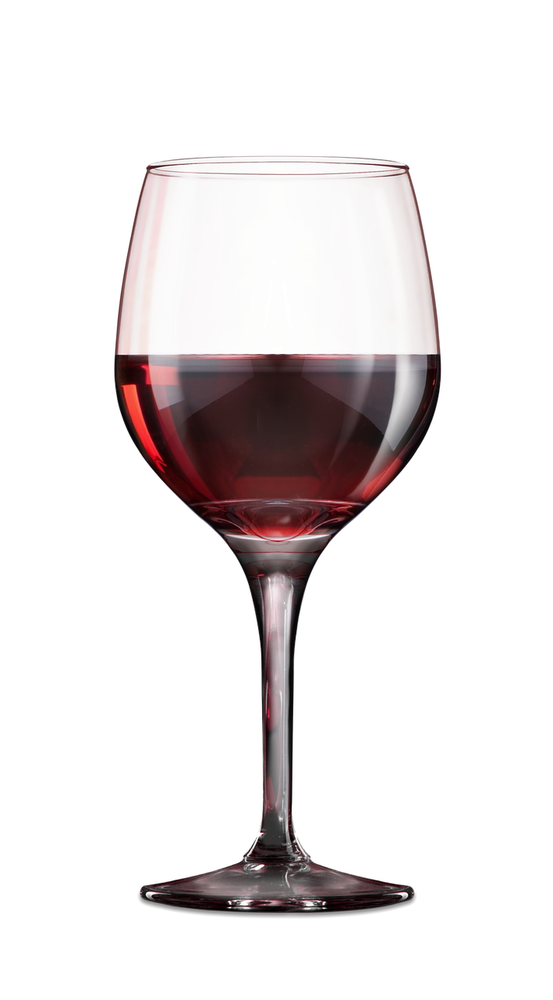

Aprende todo sobre el vino con esta sencilla pero completa guía.

Víctor Rodrigo Jara Corrial

Adriana Cerón Araya

Alejandro Cáceres Mella

Brian Erazo Bustamante

Carolina Vásquez Labadie

Gastón Gutiérrez Gamboa

Manuel Flores Cabrales

Mariona Gil Cortiella

Marisol Alcayaga Martínez

Natalia Brossard Aravena

Pablo Cañón Amengua